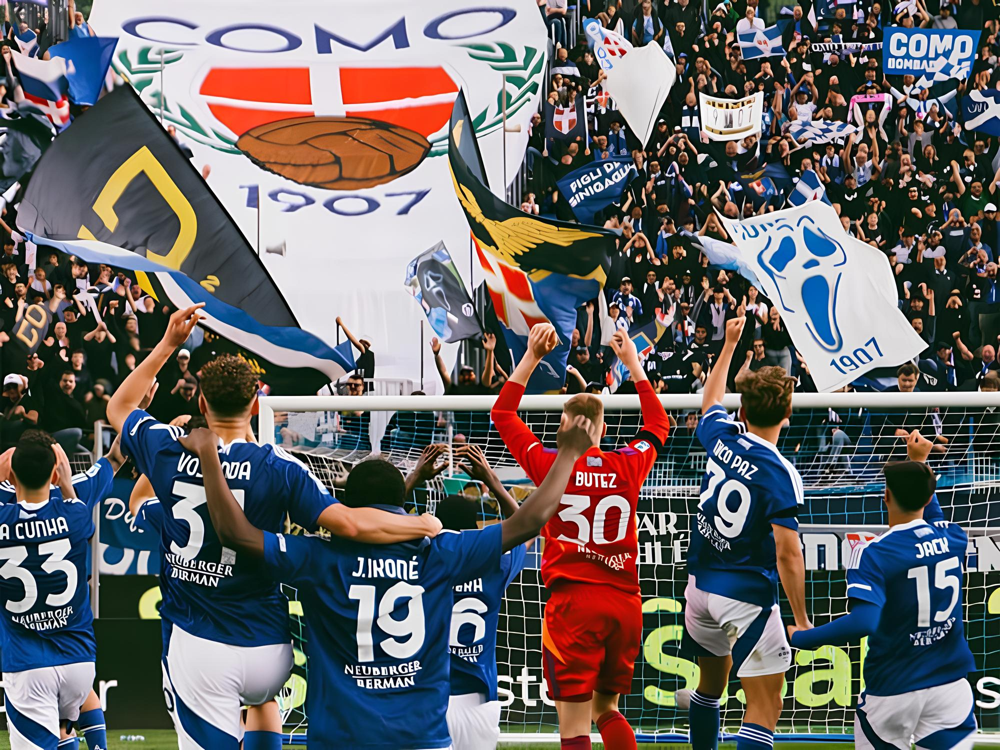
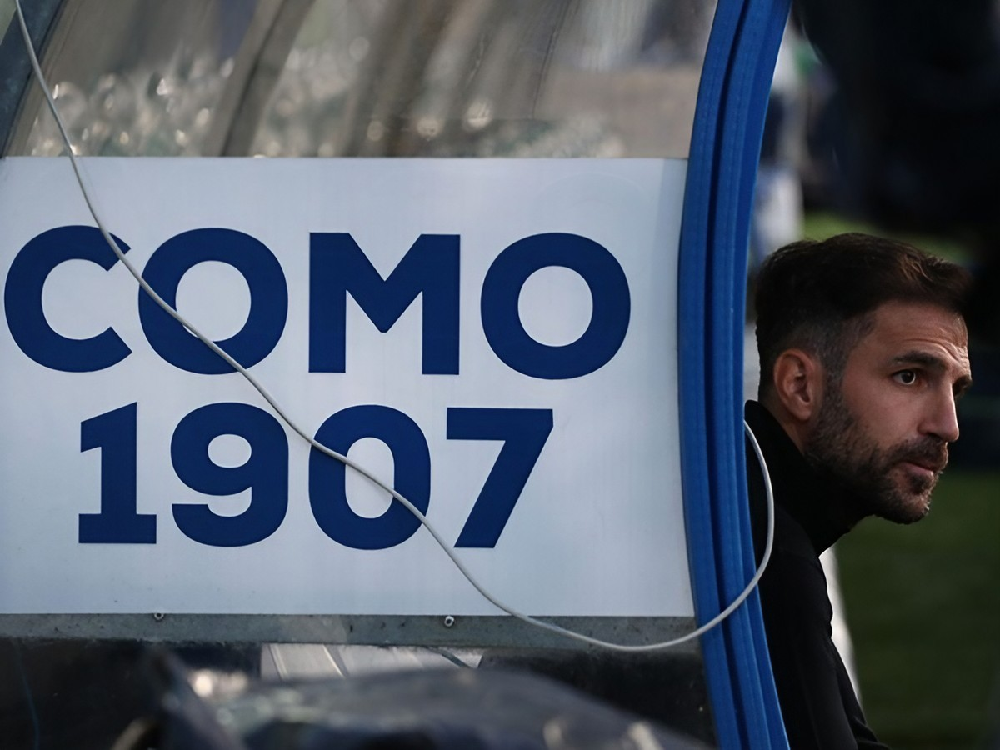
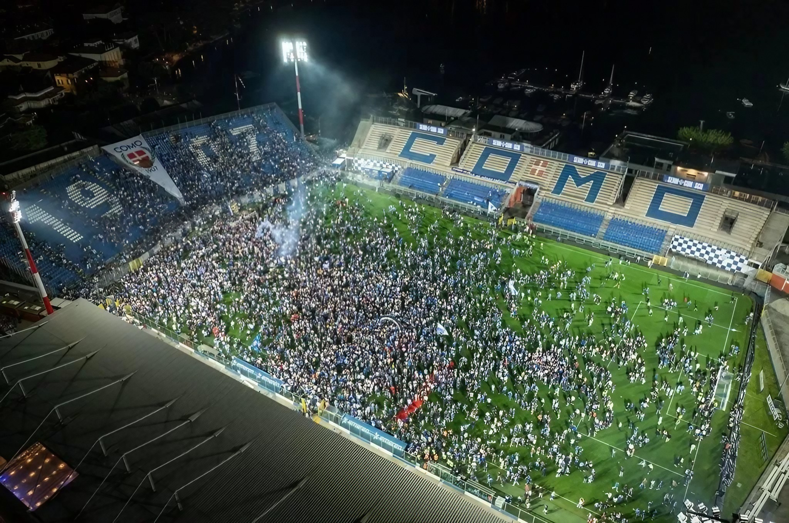
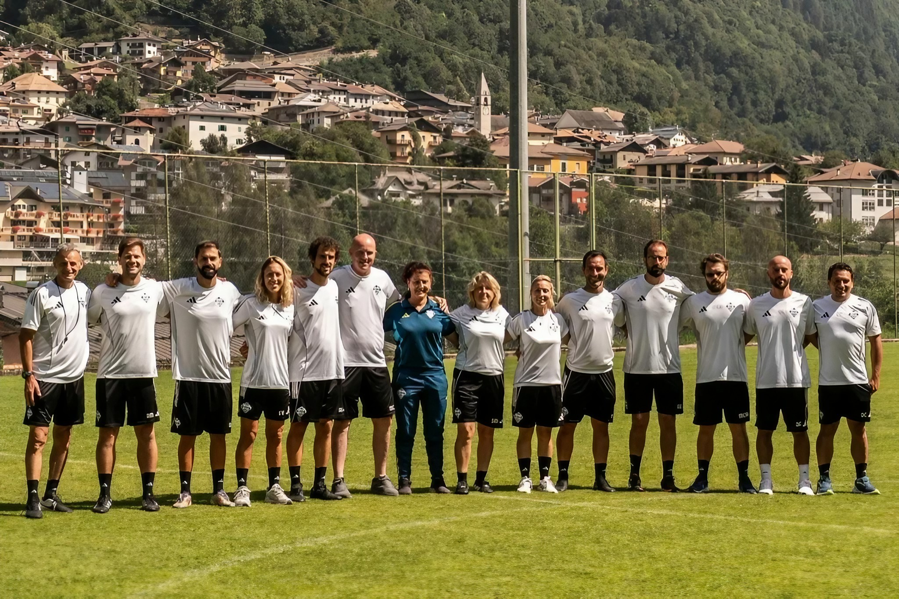
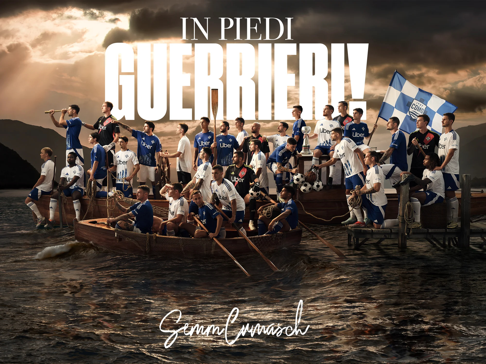
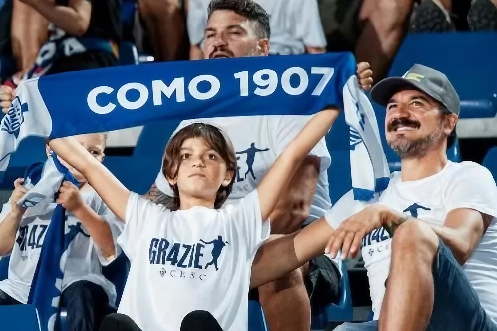

COMO 1907

Selamat datang di rumah kami.
Berdiri sejak 1907, Como 1907 adalah sebuah klub yang bukan sekadar
tim sepak bola, melainkan cerminan dari semangat kota Como. Di balik
pegunungan Alpen dan di tepi Danau Como yang memukau, kami bangkit.
Setelah lebih dari dua dekade, kami kembali ke panggung tertinggi
sepak bola Italia, Serie A. Keberhasilan ini bukan hanya
tentang memenangkan pertandingan, tetapi juga tentang kebangkitan
yang dipimpin oleh visi yang jelas dari pemilik kami, komunitas yang
setia, dan dedikasi dari setiap anggota tim.
Kami adalah I Lariani, si Biru-Putih yang berani.
Tentang Kami

Sejarah: Perjalanan Penuh Ketabahan
Como 1907 didirikan pada 25 Mei 1907. Sepanjang perjalanannya, klub
ini telah melalui berbagai pasang surut, termasuk kebangkrutan yang
beberapa kali nyaris mengakhiri riwayatnya. Namun, dengan dukungan
tak pernah padam dari komunitas lokal, kami selalu menemukan jalan
untuk kembali.
Pada musim 1949-1950, Como pertama kali promosi ke Serie A,
sebuah pencapaian bersejarah yang menandai era emas awal kami.
Setelah berbagai tantangan di divisi bawah, kebangkitan sejati
dimulai. Pada musim 2023-2024, di bawah bimbingan pelatih dan
manajemen, kami berhasil mengamankan posisi kedua di Serie B dan
kembali ke Serie A
setelah 21 tahun.
Kepemilikan: Visi Global dari Indonesia
Kebangkitan Como 1907 tidak lepas dari peran penting pemilik
barunya, Grup Djarum dari Indonesia, melalui perusahaan SENT
Entertainment Ltd. Sejak mengambil alih pada tahun 2019, visi mereka
adalah membangun klub yang solid dan berkelanjutan, berinvestasi
tidak hanya pada tim, tetapi juga pada infrastruktur dan komunitas.
Visi global ini juga didukung oleh legenda sepak bola dunia seperti
Cesc Fàbregas dan Thierry Henry, yang kini menjadi
bagian dari manajemen klub. Kehadiran mereka membawa pengalaman,
pengetahuan, dan inspirasi bagi seluruh tim dan suporter.
Stadion

Stadio Giuseppe Sinigaglia
Stadion kami bukan sekadar tempat bermain, melainkan permata di tepi
Danau Como. Dibangun pada tahun 1927, Stadio Giuseppe Sinigaglia
adalah salah satu stadion paling indah di dunia, dengan latar
belakang danau yang tenang dan pegunungan yang megah.
Dengan kapasitas sekitar 13.602 penonton, stadion ini menjadi
saksi bisu dari setiap kemenangan dan kekalahan, dan menjadi rumah
bagi ribuan suporter setia yang tak pernah lelah memberikan
dukungan. Sebagai bagian dari rencana masa depan klub, proyek
renovasi besar sedang dalam tahap perencanaan untuk menjadikan
stadion ini lebih modern dan nyaman, tanpa menghilangkan keindahan
alaminya.
Skuad
Tim kami adalah perpaduan antara talenta muda yang bersemangat dan
pemain berpengalaman yang siap menghadapi tantangan Serie A. Setiap
pemain membawa semangat juang yang sama untuk membela lambang klub
dan mewakili kota Como.
Staff Pelatih

| Name/Position |
Age |
Nat. |
Appointed |
Contract expires |
Pemain

| Number |
Player |
Age |
Nat. |
Contract |
Market Value |
Komunitas

Kami lebih dari sebuah klub, kami adalah sebuah keluarga. Julukan
kami, I Lariani, merujuk pada orang-orang yang berasal dari
wilayah Danau Como, yang menggambarkan hubungan erat antara klub dan
identitas lokal.
Di setiap pertandingan, baik di kandang maupun tandang, suara
nyanyian suporter kami, Curva Como, selalu menjadi pendorong
semangat. Kami berkomitmen untuk terus berinteraksi dengan komunitas
melalui berbagai program, karena kami percaya, keberhasilan klub
tidak akan lengkap tanpa dukungan dari orang-orang di baliknya.